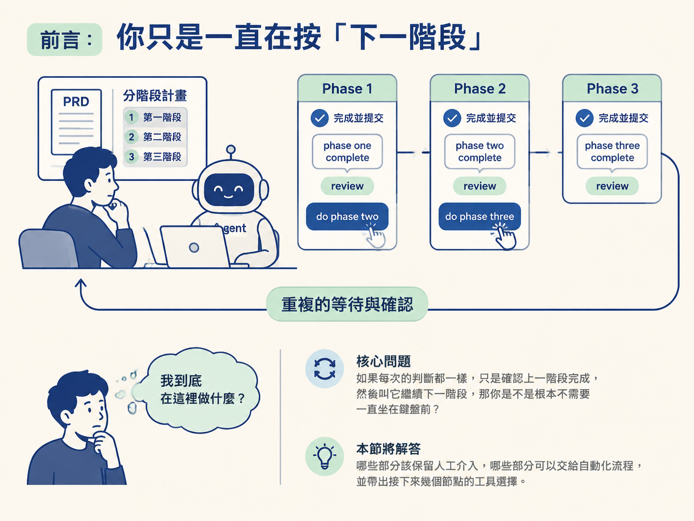
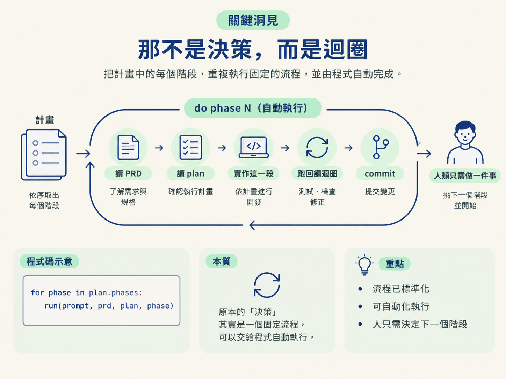
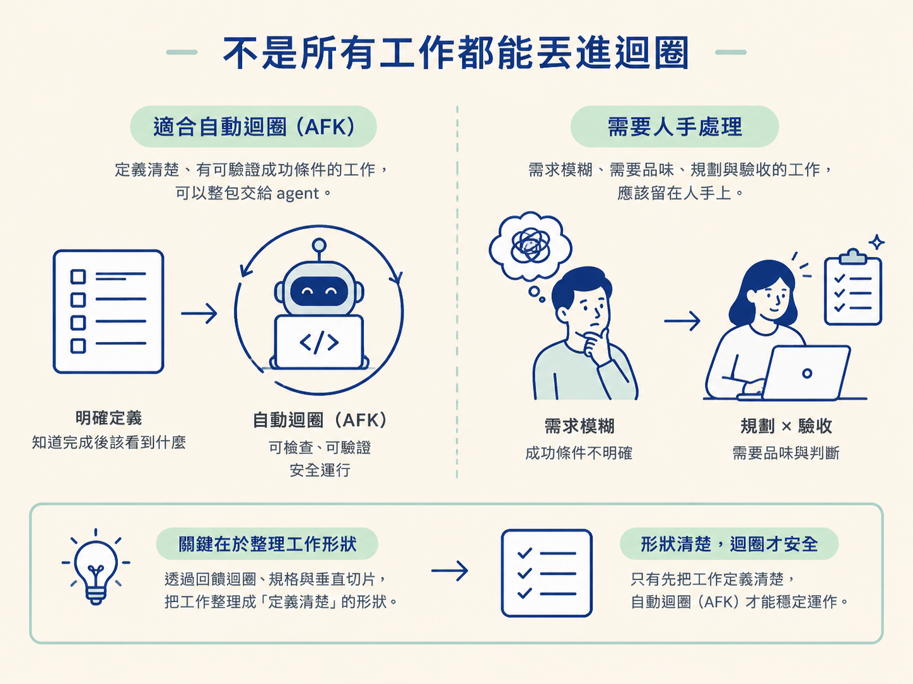

理解多階段計畫為什麼需要人下「do phase N」，以及為什麼這個動作其實就是一個可以自動化的 for 迴圈。
想像一下這個場景：PRD 已經寫好，plan 也拆成三個階段。你坐在 agent 旁邊，看著它完成 phase one。它 commit 之後回報「phase one complete」，你快速 review，確認沒問題，再下指令：「do phase two」。
第二階段跑完，你再 review 一次，接著說：「do phase three」。
做到第三輪時，你可能會突然想問：我到底在這裡做什麼？如果每次的判斷都一樣，只是確認上一階段完成，然後叫它繼續下一階段，那你是不是根本不需要一直坐在鍵盤前？
這一節要回答的，正是這個問題。答案會幫助你判斷：哪些部分應該保留人工介入，哪些部分可以交給自動化流程，也會帶出接下來幾個節點的工具選擇。

多階段計畫不是為了讓文件看起來漂亮，而是為了控制 context。一次把整個大型功能交給 agent，資訊很快會堆在一起，讓它開始漏東漏西，甚至做出難以理解的決定。
前面的節點把這種狀態稱為 dumb zone。計畫的用途，就是把工作切成一段一段，讓每個階段都能在一顆相對清楚的腦袋裡完成，留在 agent 的 smart zone。
要讓這種切分方式成立，你需要提供三樣東西：
三樣東西合在一起，才是一個可以執行的任務。PRD 和 plan 寫好之後通常不會改變；每次都需要重新提供的，反而是「現在請做哪一階段」。
前兩樣輸入是文件，完成後就可以反覆使用。真正需要人一次又一次補上的，是第三樣輸入：「do phase N」。
只要流程中有一個步驟必須等待人出手，這個流程就是 human-in-the-loop，簡稱 HITL。它的意思很簡單：人必須待在迴圈裡面。
HITL 本身不是壞事。需要品味、判斷方向，或必須由人承擔責任的環節，本來就應該留給人。不過，「指定下一階段並叫它開始」這件事看起來不太像真正的決策。
它比較像站在跑步機旁邊，每隔一段時間按一下「繼續」：不是在選方向，而是在替一個早已排好的流程計時。
把整個流程攤開來看，其實是這樣：針對計畫中的每一個階段，重複執行「讀 PRD、讀 plan、實作這一段、跑回饋迴圈、commit」。
這些步驟在前面的節點中，早已被整理成可以自動執行的流程。真正還需要人做的，只剩下「挑下一個階段，然後喊開始」。
把它寫成程式碼，就是一個 for 迴圈：
for phase in plan.phases:
run(prompt, prd, plan, phase)一旦你用這個角度來看，「我到底在這裡做什麼？」就有了明確答案：你被卡在一個原本可以交給程式處理的迴圈裡。
自動化它並不是什麼神奇的新技巧，只是把原本需要人重複按下的動作，改成由程式重複執行。

你可能會問：如果這麼簡單，為什麼以前不早點這樣做？
問題出在模型能力：把任務整包交出去划不划算，取決於模型有多強。就算任務定義得很清楚，只要模型能力不足，最後產出的結果仍然需要人花大量時間收拾，整體速度反而可能比自己做更慢。
作者提到，2025 年 12 月前後是一個轉折點：模型終於好到可以接手定義明確的任務，而且通常能做出不錯的結果。
他也提到，這條路線的靈感來自 Geoffrey Huntley 談 Ralph 的文章。那篇文章講的，就是用一個很單純的 for 迴圈，反覆執行同一段 prompt，一次完成一批工作。
作者一開始採用 Ralph 的做法，後來逐漸發展出自己的版本，並替這個模式取了一個新名字：AFK agents。
AFK 是 away from keyboard 的縮寫，意思是你可以離開鍵盤去做別的事，讓 agent 繼續工作。對作者來說，這代表同一段時間裡，你可以規劃下一批工作，agent 在背景產出程式碼。就像把自己複製成好幾份，同時處理不同部分。
理解這個洞見之後，很容易興奮過頭，想把整條流程都自動化。但真正的邊界，不在於「能不能寫成 for 迴圈」，而在於任務本身是否定義清楚。
只有具備明確定義、而且有可驗證成功條件的工作，才適合整包交給 agent。所謂定義清楚，是指你知道完成後應該看到什麼，也有辦法檢查它到底有沒有做到。
反過來說，如果需求還停留在腦中的模糊想法，連成功條件都說不清楚，那麼把它丟進迴圈，最後只會得到一份你不知道對不對的程式碼。
規劃和驗收這類需要品味的工作，本來就應該留在人手上。這也說明了前面那些節點為什麼重要：回饋迴圈、規格和垂直切片，都是在幫你把工作整理成「定義清楚」的形狀。形狀整理好了，迴圈才跑得安全。

| 人下「do phase N」 | 自動迴圈（AFK） | |
|---|---|---|
| 誰決定下一步 | 人 | 程式依計畫決定 |
| 人何時在場 | 全程盯著 | 規劃與審查時 |
| 發現錯誤的速度 | 快，當場看見 | 慢，跑完才看見 |
| 適合的工作 | 模糊、需要品味 | 定義清楚、可驗證 |
所以這一節的結論不是「人可以被移除」，而是「執行已經定義好的階段」這一小段可以被自動化。
你仍然要負責規劃、定義成功條件，以及最後的驗收。真正改變的是：你不必再一直待在旁邊，扮演那個每隔幾分鐘就按一次按鈕的人。
多階段計畫把工作切進 agent 的 smart zone。每次交辦需要三樣輸入：終點，也就是 PRD；路線，也就是 plan；以及當下要執行的階段。其中，「do phase N」看似是一個決策，實際上只是一個 for 迴圈，因為讀取、實作、跑回饋迴圈和 commit 等中間工作，早已可以自動化。模型在 2025 年底好到能承接定義明確的任務，才讓這個迴圈真正跑得動；但需求模糊、需要品味的工作，仍然應該留在人手上。
既然「do phase N」本質上是一個迴圈，下一個問題就是：這個迴圈要在哪裡跑？要用哪個 agent 跑？又要不要先隔離環境？下一節會介紹 Sandcastle，以及它的兩種執行模式，並說明為什麼第一次應該使用 interactive，而且還不要掛沙箱。